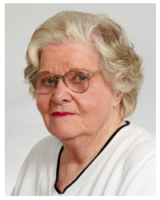

Jean Jennings Bartik nasceu em 27 de de dezembro de 1924 e foi uma das programadoras originas do ENIAC, além de ter trabalhado na criação do BINAC e do UNIVAC.
Ela começou seu trabalho na Unversidade da Pensilvânia, fazendo cálculos balísticos manualmente e, mais tarde, com o ENIAC. Enquanto desenvolviam a programação do ENIAC, as "mulheres do ENIAC", como ficaram conhecidas (das quais Bartik fazia parte), desenvolveram diversos conceitos que são até hoje aplicados na programação.
Posteriormente, Bartik também converteu o ENIAC para que pudesse utilizar programas gravados na memória, além de ter participado no desenvolvimento do BINAC (primeiro computador a utilizar fitas magnéticas) e do UNIVAC (o primeiro computador comercial).
